Design Operations Lead & Product Design Lead
@
Kaya AI
- Built the entire design function from zero across product, marketing, and brand for an AI-native procurement and supply chain platform, scaling to 17 enterprise customers including Suffolk, Turner Construction, Harkins, and Prologis.
- Grew contract value 20x versus 2024, scaling ARR to $2.7M across 17 enterprise accounts supporting $20B+ in managed construction value.
- Drove brand and growth marketing across out-of-home advertising, digital campaigns, and enterprise partnership assets, maintaining consistency across every customer touchpoint.
- Established design operations processes, sprint workflows, and cross-functional handoff standards that enabled team scaling without added headcount.
- Led end-to-end UX strategy and usability reviews across procurement workflows, contributing to 85% operational efficiency gains and 50% reduction in project delays.